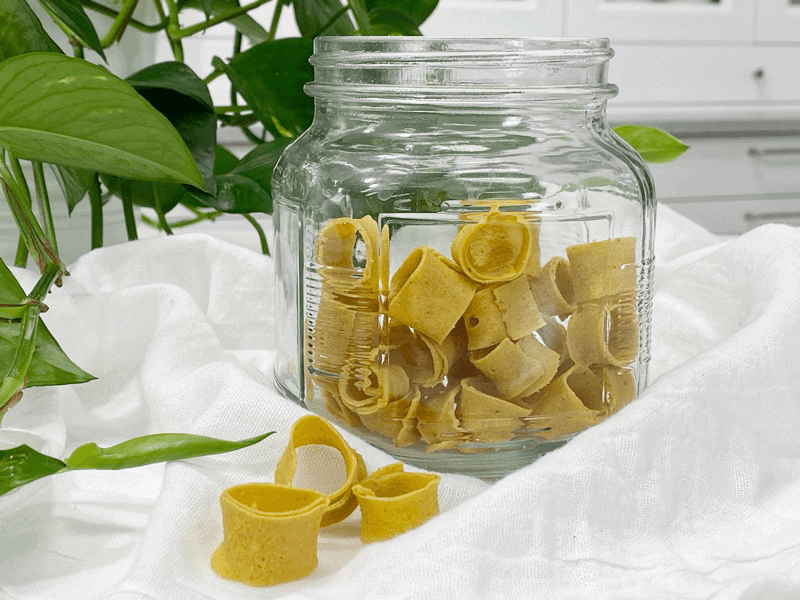

Cheesy Fun-Doodles
Who doesn’t love cheesy fun-doodles?! What? You’ve never heard of them? It’s an ol’ Scandinavian / Norwegian (my heritage) treat.. that I just created! Never to be seen or tasted anywhere else but here! A crispy, snappy, flavorful, salty, cheesy snack. Each crave-worthy bite is nut-free, vegan, gluten-free, soy-free, and grain-free. (That just gave you goosebumps, didn’t it?)

This recipe came into existence because I am a master when it comes to “playing with my food.” Did you ever hear, “Don’t play with your food!” as you were growing up? Well, now it’s my job! (Take that, Mom!) Whenever I make, create, or design a recipe, I always split up the batter and think of different ways to use it. I honestly can’t help myself.
Creativity in the Kitchen!
You don’t have to be a trained chef to create something delicious in the kitchen. Just follow the recipe, right? Being told to use our creativity in the kitchen can be a bit intimidating…I mean, what if we mess something up? But I have learned from working with raw recipes that they are so forgiving and transformable! Cookie recipes quickly transform into a breakfast bar, granola, or cereal. Bread becomes crackers or croutons.
Recipes are a fantastic tool. They can encourage us to prepare healthy foods for ourselves and get more comfortable in the kitchen. The truth is, I still occasionally use recipes, but nowadays, I use them as guidelines and inspiration.
Recipes Are Opinions, Based on What Works for That Person
Have you ever thought of recipes in that light? If not, let’s take a moment to do so. Since recipes come from someone’s ideas, they’re ultimately shaped by that person’s opinions, tastes, and preferences. If you have specific food allergies, dietary restrictions, or lifestyle that you choose to follow (vegan, raw, paleo, etc.), think about how to reshape a recipe so you can enjoy it. That is something that I repeat over and over throughout my site. I want you to enjoy my recipes, but I want you to become familiar enough with ingredients, measurements, textures, and flavors to find the confidence to accommodate your family’s needs.
When Modifying a Recipe…
Keep the following rules in mind:
- Keep an eye on the ratios of liquids to solids.
- Consider the texture a particular ingredient provides, and substitute based on texture when possible.
- Adjust the recipe as you go—add liquid to thin, thicken by increasing an ingredient when appropriate, add more spices or salt for flavor as needed, etc.
- When deviating from the set designed recipe, don’t blame the recipe developer if it doesn’t turn out. Do observe what went wrong, and try again!
You know, I now realize that the writings I share with each recipe post are written in the same manner as I design a recipe. Most of the time, I never quite know the outcome (of a recipe) or what I am going to talk about (in the post). It all unfolds organically and stems from my heart and inspiration. I am so thankful for this “platform” in which I work. It allows me to be 100% me.
Tell Me About Cheesy Fun-Doodles
I had no idea that I was going to talk about modifying recipes when I sat down to share this recipe with you, so I’d better take a moment to chat about the recipe at hand. Good idea, huh? When I was designing these little crunchy cheesy snacks, the first thing that came to mind was “cheesy fun-doodles!” They are cheesy in flavor and fun to make. And to be honest, just looking at them brings a smile to my face. They are super easy to make. In fact, the hardest part is waiting for them dry so you can enjoy them. I hope you enjoy this recipe. Please keep me posted below as to what you think. Blessings, amie sue
 Ingredients:
Ingredients:
Cheese base:
- 2 cups (256 g) raw sunflower seeds, soaked
- 1 1/2 cups (320 g) water
- 2 1/2 Tbsp (25 g) lemon juice
- 3 Tbsp (38 g) raw Sweet & Spicy Mustard
- 1 Tbsp (13 g) raw apple cider vinegar
- 1 Tbsp (20 g) maple syrup
- 1/4 cup (30 g) nutritional yeast
- 1 tsp (6 g) Himalayan pink salt
- 1 tsp (3 g) onion granules or powder
- 1 tsp (2 g) garlic powder
- 1 tsp (4 g) ground cumin
- 1/2 tsp (1 g) turmeric
Agar slurry:
Preparation:
Cheese base:
- After soaking the sunflower seeds, drain, and rinse. Place in a high-powered blender.
- Add 1 1/2 cups water, sunflower seeds, lemon juice, mustard, vinegar, agave, nutritional yeast, salt, onion granules, garlic powder, cumin, and turmeric. Blend until creamy; it will be thick. If you have a Vitamix with a plunger, use that to keep the mixture moving. Otherwise, stop your machine occasionally to scrape the sides down.
- Test for grittiness by rubbing the mixture between your thumb and finger. If you feel any grit, keep blending.
Agar slurry:
- Once the “cheese” mixture is ready, it is time to make the agar gel. In a small saucepan, bring 1/2 cup of water to a light boil, add the agar. Stir continuously until the agar dissolves, which can take several minutes. Keep whisking! If it gels up in the pan, return to heat and melt it down again.
- Start the blender and get a vortex going with the mixture. Drizzle in the agar gel and blend until combined. You will need to stay focused and move fairly quickly. Agar will start to set up as it cools.
- Pour into a (9″ x 12.5″) rectangle baking pan and place it in the fridge, uncovered, for at least 30 minutes. I don’t use anything to prepare my molds to help them release. This mixture pops out easily.
- Once the cheese is set and firm, it is time to create the cheese fun-doodle shapes.
Forming the fun-doodles
- I cut 1″ strips that about 6″ long. Then slide the length of the cheese stick along the blade of a mandoline. You want these thin! For the best thickness, I recommend (this) mandoline.
- Gently pick up each strip and curl it around your fingertip and then set it on the mesh sheet that comes with the dehydrator. Continue this process until you made all the fun-doodles you can stand!
- Dry at 145 degrees (F) for 1 hour, then reduce to 115 degrees (F) for 6-8 hours.
- Every once in a while, take one out and let it cool to see if it is snappy.
- Store in an airtight container on the counter for up to 5 days. They may last longer, but not in our kitchen (if you know what I mean).
© AmieSue.com